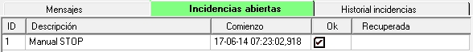
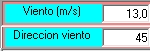
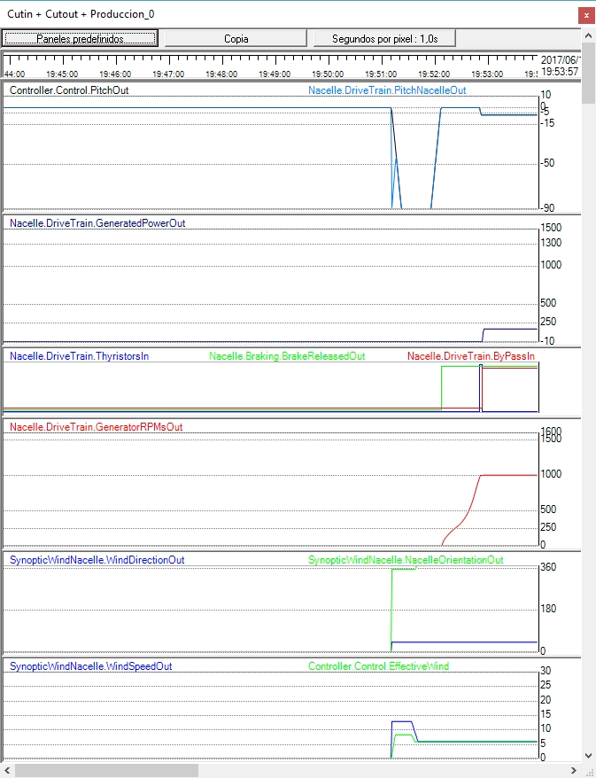

Objectivo:Identificar as condições de velocidade do vento que permitem a geração começar.
O que observar:Velocidade do vento, estado do sistema e transição do desligamento para a operação.
O que observar:Velocidade aproximada do vento no momento do arranque e evolução subsequente.
□ Observe se há histerese entre o desligamento e o arranque.
O objetivo deste prático é familiarizar o aluno
•com os diferentes sinópticos disponíveis.
• com a criação das condições necessárias para que a turbina eólica inicie a produção.
1. Assegurar que a simulação está em execução: no "Simulador em Execução..."sinóptico, pressione "Executar."
2. Note que o ângulo de lançamento muda para -90o. Pode verificar isto no comboio de energia.

Também no "WindNacelle" sinóptico:
E no "Control Terminal" sinóptico:
3. Verifiquem no "Armário Eletrônico..." sinótico que o "Interruptor Principal" está conectado. Ver a seguinte figura:


Fig. Detalhe do "Interruptor principal."
4. Na tela "Control Terminal", verifique se não há incidentes que precisam ser reconhecidos no "Incidentes abertos" tab (excepto para "Parada manual").
Por exemplo, se você tiver 'executado' a simulação e o "Main Switch" não estiver conectado, o Controlador detectará a falta de fonte de alimentação principal e relatará incidentes como aqueles mostrados na figura seguinte, observando a data em que foram detectados (ano-mês-dia hora:minuto:segundo,millisegundo):
Se você mudar o "Main Switch" para 'On', o Controlador detectará que as condições que causaram os incidentes desapareceram e observará o momento em que isso ocorre na coluna intitulada "Recuperado." Veja a figura a seguir.
Estes tipos de incidentes devem ser «reconhecida 'pelo operador: para fazer isso, eles devem verificar (com o mouse) a caixa na coluna "OK" para cada um (primeiros dois itens na figura acima). Quando você faz isso, você verá que eles desaparecem do "Incidentes pendentes" lista e são automaticamente movidos para o "Histórico de incidentes" tab, como mostrado na figura a seguir:
Esta lista contém o registro mantido pelo próprio Controlador dos incidentes ocorridos. Em outras classes práticas, você verá que há incidentes que não precisam ser 'apercebidos' pelo operador: ou seja, o Controlador continuará a executar o 'protocolo' planejado quando as condições do incidente tiverem desaparecido, sem exigir que o operador o reconheça.
5. Nesta situação, a lista em 'Abrir Incidentes' só deve mostrar "Manual STOP", como na seguinte figura:
O Controller está em posição de receber o comando "START".Neste tipo particular de Controlador, o comando (manual) do Terminal de Controle deve ser precedido da 'aprovação' do operador, para o qual a caixa correspondente à linha "Manual STOP" na lista acima deve ser verificada. Veja a figura a seguir.

6. Certifique-se de que você tem um "Gravador" visível onde o "Painel Predefinido" com o nome "Corte + Corte + Produção" é exibido, como mostrado na figura a seguir. VerComo exibir um gravador e escolher um painel predefinido nele.
7. Mudar a velocidade do vento para 6,0 m/s. Este é um baixo valor do vento: a turbina eólica simulada gera uma potência nominal de 1.300 KW a uma velocidade nominal do vento de cerca de 12 m/s. Uma velocidade do vento de 6 m/s está abaixo da velocidade do vento "Max. for Large Generator" (ver Valores funcionais do vento), então sabemos que a conexão de 6 pólos do Gerador (Pequeno Gerador) será usado.
Para fazer isso, localize o "SynopticWindNacelle" sinóptico (verComo trazer um sinóptico específico para o primeiro plano).
Neste sinóptico, coloque o mouse sobre o indicador de vento (fundo branco). Veja a figura a seguir.

1. Dactilografando o valor desejado diretamente.
Observe que quando você muda o valor, o fundo fica amarelo até que você pressione a tecla "Enter" no teclado. Se você quiser interromper a mudança, antes de pressionar "Enter", você pode pressionar a tecla "ESC" (no topo esquerdo do teclado).
2. Utilizar "Page Up," "Page Down," "Seta para Cima," e "Seta para Baixo" chaves.
Este método é preferido e permite alterar o valor em incrementos de 1 m/s (Page Up/Page Down) ou em incrementos de 0,1 m/s (Arrows).
Este é o método preferido porque limita a variação da velocidade do vento a valores razoáveis, enquanto no método 1, essas mudanças podem ser muito abruptas.
8.Você pode aproveitar isso para mudar a direção do vento, usando o mesmo procedimento no "Direção do Vento" indicador.
9.Pressione o botão "START" e observe a evolução dos seguintes sinais no gravador e nos diferentes sinópticos.
1.Velocidade de rotação da lâmina:Em SynopticDriveTrain, Control Terminal e Recorder.
2. Velocidade de rotação do eixo gerador: no Terminal de Controle e Gravador.
3. Orientação da naceleEm SynopticWindNacelle e Recorder.
4. Pressão do circuito hidráulico, bombafuncionamento, elibertação de travões: em SynopticDriveTrain e Recorder
5. Pitchângulo: em SynopticDriveTrain (tanto em 'Visão interna' e 'Visão 3D'), em Terminal de Controle, em SynopticWindNacelle, e no Logger.
6. Velocidade do vento: em SynopticWindNacelle, em Control Terminal e Recorder.
7. Contacto de bypass do Thyristorestado (ligação à grelha): no Gabinete Elétrico (visão interna), no Terminal de Controlo e no Registo.
10.Você obterá uma evolução de sinal no gravador semelhante à mostrada na seguinte figura:

11.Você pode ver que, após uma certa quantidade de tempo (alguns segundos) após pressionar START, o controlador ativa os motores de orientação ("Virar à esquerda"e"Virar à Direita") até que a orientação da Nacelle 'apreciavelmente' corresponda à direção indicada do vento, mas não exatamente. Isto porque o controlador assume que há um certo grau de incerteza na medição da direção do vento e que, por outro lado, movimentar a energia 'necessária' da nacele e, portanto, tem um custo. O resultado é que se o erro entre a direção do vento 'medido' e a orientação da nacele estiver dentro de uma certa margem, ela 'decide' que está orientada.
O valor dessa margem no simulador é exagerado para fins educacionais.
Da mesma forma, a velocidade de rotação da nacele no simulador não é realista, embora este seja um valor que pode ser alterado, mesmo durante a execução da simulação, utilizando os parâmetrosNacelleYawing.CWYawingSpeedeNacelleYawing.CCWYawingSpeed. O valor padrão é de 10 graus/segundo, enquanto que na realidade esse valor é em torno de 0,5 graus/segundo.
12.O conceito de "Velocidade do vento eficaz."
Este valor corresponde ao valor de avento frontal ao plano de rotação das lâminas, isto é, o vento que efetivamente serve para girar as lâminas.
Se a turbina eólica não estiver orientada, este valor corresponde ao produto da velocidade real do vento multiplicada pelo cosseno do ângulo de desalinhamento. Corresponde ao vetor vermelho na figura seguinte.
Este valor efetivo é mostrado no "VeloEficVien" indicador no "Controle de Terminal" synoptic. Quando a nacele é orientada, este valor coincide com o valor da velocidade do vento. Isso pode ser verificado pela evolução de ambos os valores na figura do gravador, no último canal, onde eles convergem para o mesmo valor quando a nacele é orientada.
13. Análise funcional da sequência de eventos durante a operação de ligação à rede(cutina):
1. Se a nacele não é orientada para o vento, a operação de orientação começa. Pode ser necessário primeiro executar uma operação de desbobinamento de cabo de energia.
2.Com base na medição do vento, o controladordecideque o gerador, que tem duas conexões possíveis (correspondente a enrolamentos de estator com 4 ou 6 pólos magnéticos), "Grande Gen."e"Pequeno Gen." respectivamente), será conectado com 6 pólos ("Small Gen."). Neste caso,velocidade síncronaé 1000 rpm.
3. Antes de iniciar a operação real, o controlador decide verificar o estado do mecanismo de freio (condição do sapato do freio, mola, etc.). Para isso, ele ativa o freio, enquanto fixa o passo das lâminas para um valor em que ele sabe que o vento produz torque mecânico suficiente nas lâminas para esta verificação.
4. Se tudo estiver bem, ele passa a liberar os freios: para fazer isso, fecha a válvula de circuito hidráulico e inicia a bomba.
5. O comboio de energia começa a acelerar.
6. O controlador monitora o valor de aceleração do trem de potência e atua no campo (que é a fonte de aceleração) para que este valor permaneça abaixo de um certo nível.
7. Quando a velocidade do gerador se aproxima da velocidade síncrona, o controlador ativa os tiristores. O ângulo de condução do tiristor segue um padrão de começar com um pequeno ângulo de condução e atingir a condução completa após alguns segundos (tipicamente 2 a 4 segundos).
Veja a animação emIniciador suave (conexão suave) para a grade.
8. Quando os tiristors estão conduzindo plenamente, o controlador ativa os contatores de bypass do tiristor, que os contornam: nesta situação, nenhuma corrente flui através dos tiristors e eles são desativados. A turbina eólica está em produção.